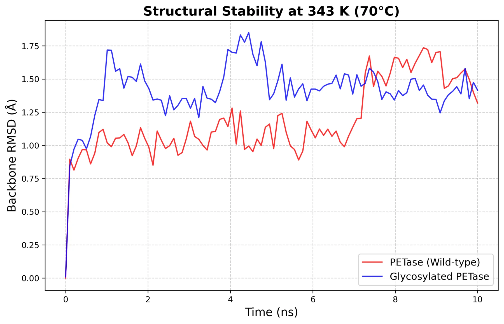
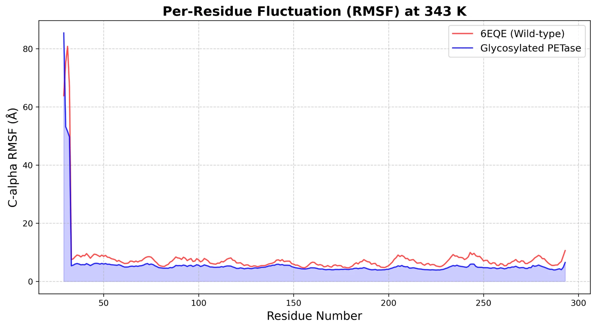
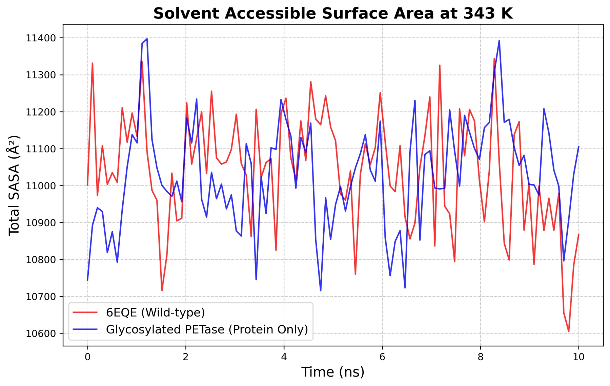
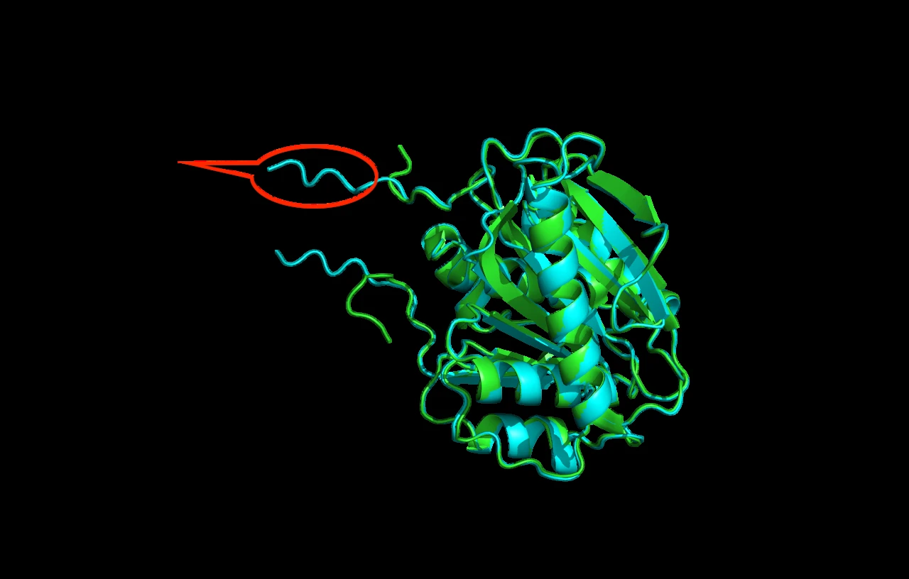
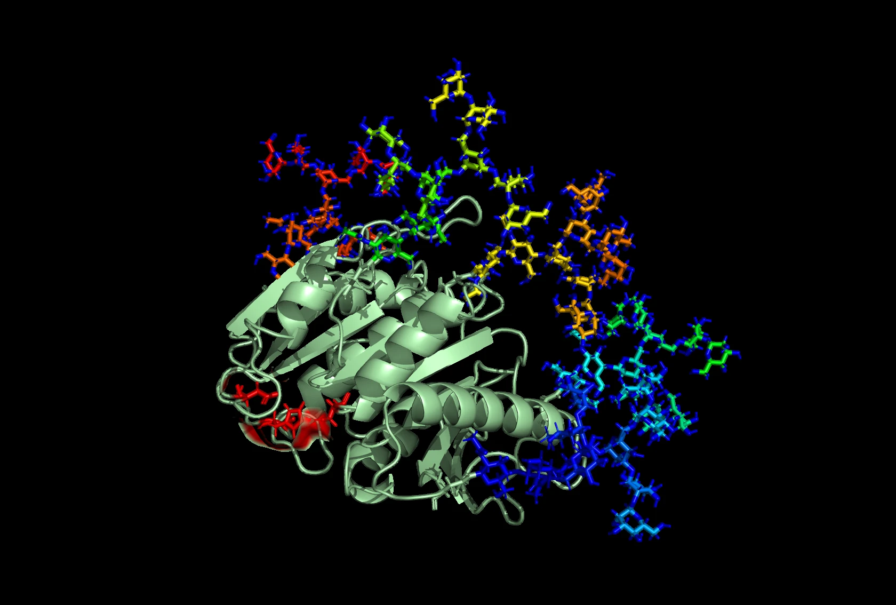
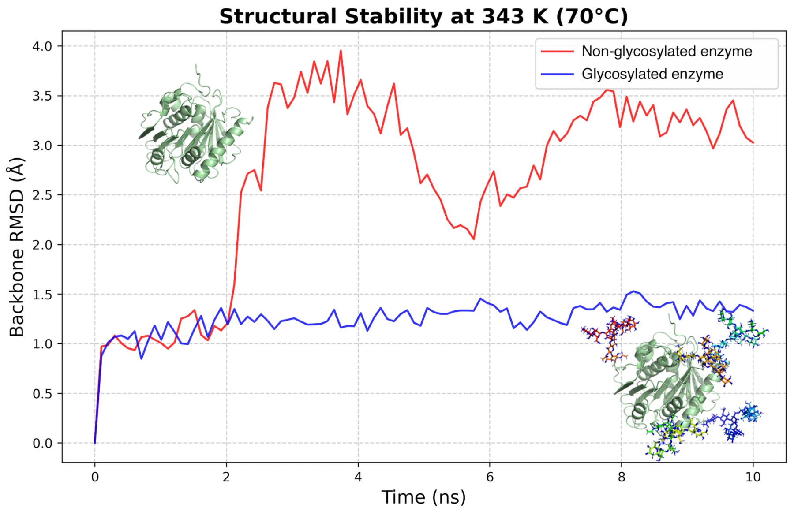

Our computational analysis follows 10 ns molecular dynamics simulations at 70°C, examining enzyme stability and the effect of glycosylation.
PETase results

View full size1. Backbone RMSD Reveals Enhanced Global Thermostability
To evaluate the impact of glycosylation on the overall structural integrity of PETase under heat stress, a 10 ns molecular dynamics simulation was performed at 343.15 K (70°C). The backbone Root Mean Square Deviation (RMSD) was calculated to monitor structural drift from the initial conformation. As shown in the RMSD analysis, the wild-type PETase (Control, 6EQE) maintained relative stability for the first 6 ns but exhibited a sharp, sudden spike in RMSD at approximately 7 ns (increasing from ~1.0 Å to ~1.7 Å). This abrupt deviation strongly indicates the onset of thermal unfolding and loss of native structure. In contrast, the glycosylated PETase demonstrated an initial adjustment phase—likely accommodating the bulky glycan structures—followed by a highly stable plateau for the remainder of the simulation. These results suggest that the introduction of N-linked glycans effectively prevents the rapid heat-induced structural degradation observed in the wild-type enzyme.
2. C-alpha RMSF Highlights Local Rigidification by Glycan Shields

View full sizeTo understand the local dynamic behavior of the enzymes, the Root Mean Square Fluctuation (RMSF) of the C-alpha atoms was analyzed. The wild-type PETase displayed high degrees of flexibility, characterized by prominent fluctuation peaks at specific loop regions, most notably around residues 30-50 and 200-250. Remarkably, the glycosylated PETase exhibited a significant suppression of these fluctuations across the entire protein sequence. The local flexibility in the aforementioned highly mobile loops was markedly reduced. This damping effect indicates that the engineered glycan networks act as physical anchors, restricting excessive thermal motion and rigidifying the surface loops, which is a crucial mechanism for maintaining enzymatic stability at elevated temperatures.

View full size3. SASA Analysis Indicates Preservation of Structural Core
The Solvent Accessible Surface Area (SASA) of the protein atoms (excluding glycans) was measured to assess changes in structural compaction and solvent exposure. The wild-type PETase exhibited severe fluctuations in total SASA, culminating in a sharp, abnormal drop between 9.5 and 10 ns. This drastic reduction in surface area perfectly correlates with the unfolding event observed in the RMSD data, suggesting a structural collapse or abnormal hydrophobic core packing due to thermal denaturation. Conversely, the glycosylated PETase maintained a much more consistent and steady SASA profile throughout the 10 ns simulation. This consistency further confirms that the glycan shield successfully protects the structural core of the enzyme, preventing the fatal structural collapse that occurs in the unglycosylated wild-type under identical heat stress conditions.
HotPETase
1. Structural Superposition & Tag Influence: We modeled the recombinant construct (with the N-terminal extension and C-terminal tag)(cyan) and superimposed it with the wild-type HotPETase (PDB ID: 7QVH) (green). The alignment yielded an exceptionally low Global RMSD of 0.233 Å. As shown in the attached image, the core fold remains entirely undisrupted, and the terminal extensions are fully solvent-exposed, projecting away from the main structure.

View full sizeN-Glycosylation Site Prediction & Active Site Analysis: Based on our FASTA sequence numbering, we identified 5 predicted N-glycosylation sites at positions: 114, 138, 190, 264, and 277.
We mapped these onto the 3D structure (see attached image highlighting the catalytic triad: Ser160, Asp206, His237 in red).
We noted that positions N190 and N264 are in close structural proximity to the catalytic triad residues.
However, based on our previous 10ns Molecular Dynamics (MD) simulations comparing the unglycosylated and glycosylated forms, the addition of glycans at these sites did not induce steric hindrance in the active site pocket. Instead, the glycosylated model demonstrated significantly improved structural stability and lower RMSF values, suggesting these glycans act as stabilizing anchors suitable for high-temperature conditions.

View full size
View full sizeThis molecular dynamics (MD) simulation plot illustrates the stabilizing effect of glycosylation on the HotPETase enzyme's tertiary structure at elevated temperatures (343 K / 70°C) over a 10 ns period. The non-glycosylated enzyme (red line) exhibits a sharp increase in backbone Root Mean Square Deviation (RMSD) after 2 ns, fluctuating between 3.0 Å and 4.0 Å, which signifies significant conformational drift, thermal instability, and partial unfolding. In contrast, the glycosylated enzyme (blue line) maintains a low, steady RMSD around 1.0–1.5 Å throughout the run, demonstrating that attached glycan chains (shown in the bottom-right inset) effectively reinforce the protein's core fold and protect it against heat-induced structural denaturation.
CONTINUE EXPLORING Human practices